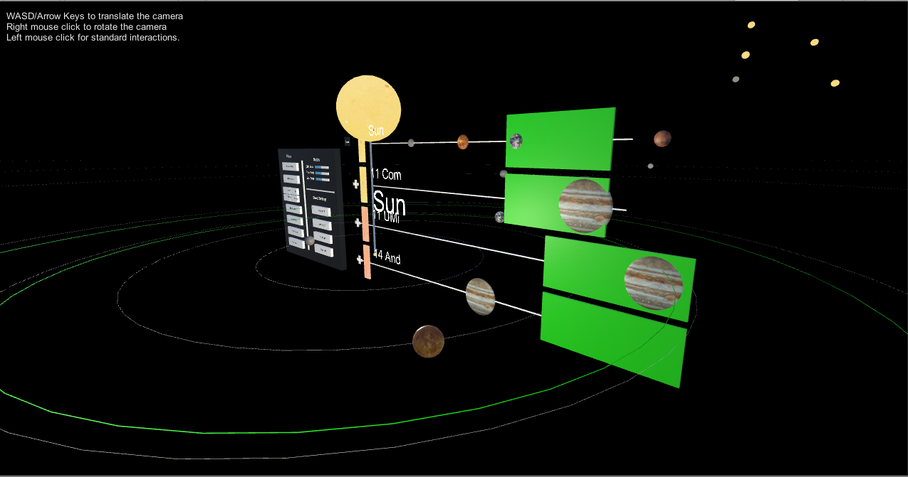
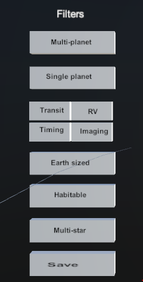
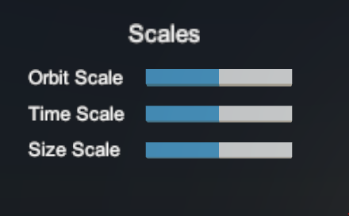
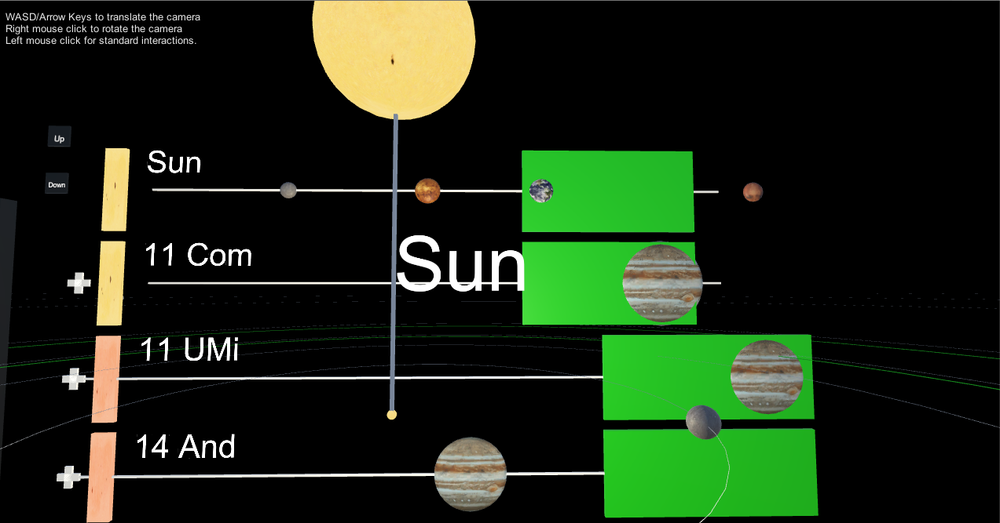
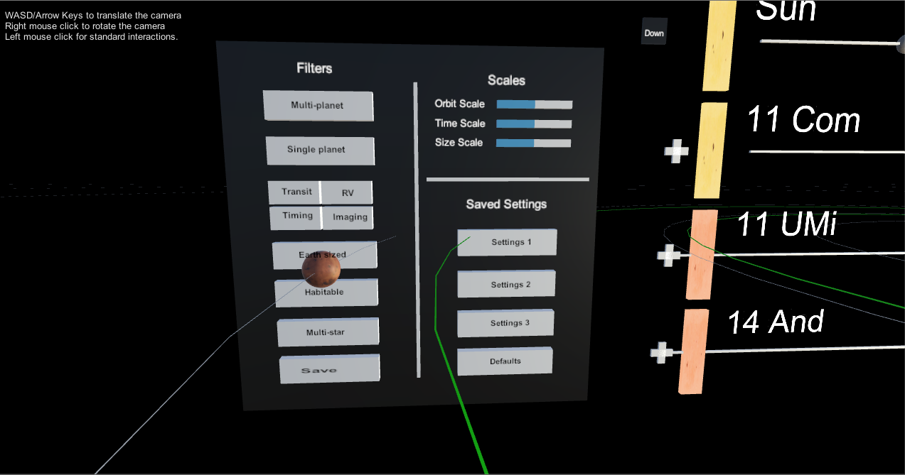
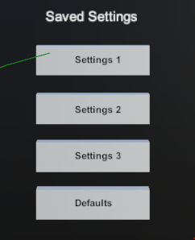

'Here Comes the Sun' is a virtual reality application that visualizes exoplanetary systems and helps the user make comparisions between different planetary systems. For this application, we used a dataset of 649 planetary systems including our Solar system. Since the anomalies in scale are a huge issue while dealing with celestial objects, we used logarithmic scale customized to handle the data dynamically.
'Here Comes the Sun' is a project for the course CS 491, Virtual and Augmented Reality at the University of Illinois at Chicago. The problem statement is available here.

The ability to hover over an object to get its details has been added to the application. The user can point at any planet or star in the planetary system with the laser pointer and press the trigger button to get detailed information about the respective celestial object - this is shown in the image below. The input from the controllers is the main mode of communication here.
We have added a number of filters that would be helpful when viewing large number of planetary systems. These filters include categories such as Earth and Super Earth sized planets, systems with single planets, multiple planets, systems with multiple stars (binary and ternary systems), based on the discovery methods (Transit, RV, Timing, Imaging), systems that have planets in habitable zone of the star etc.

We have added a number of filters that would be helpful when viewing large number of planetary systems. These filters include categories such as Earth and Super Earth sized planets, systems with single planets, multiple planets, systems with multiple stars (binary and ternary systems), based on the discovery methods (Transit, RV, Timing, Imaging), systems that have planets in habitable zone of the star etc.

The user is presented with a 2D view of the planetary systems that match any filters that the user selects. In this view, a number of systems are stacked one below the other. In each system, the star and the corresponding planets are displayed in a horizontal line separated by a scaled distance. User has the freedom to select any of systems from more than six hundred systems. A menu item near each system allows the user to add and remove the system from the 2D View. The user can also add systems to the 3D view by pointing to any star from the 3D star view and selecting the trigger.

The 2D view is also supported by 2 menu options that allow the systems in the 2D view to be scrolled up and down. The panel of the 2D View is of fixed length. Only a maximum of 4 systems are shown at a time while the rest of the systems can be viewed using the scroll controls.
In the exoplanet data, there are a number of binary and trinary systems. These are planetary systems with more than one star. These systems are represented in this application. In a binary system, the planets around each star are represented separately and other stars related to the binary are also mentioned.
The application allows the user to rearrange the order in which he views the systems in the 2D View. This is implemented with wand interaction.

When the user has used multiple filters and scaling controls, there is no need to feel lost. The ‘Defaults’ option comes in handy when the user wants to reset the environment to its original state, the user can press the Grip button to go to the default view.
When the given filters are selected, it also allows you to store a combination of these filters as a custom setting. You can save these settings and access later from the control panel. A maximum of three configurations are allowed to be saved by the user.

Audio is added for interactions with the menu items. Also an ambient background sound with space theme is also added.
While working on this project, we came across a number of interesting statistics and data about the planetary systems. The number of planetary systems discovered drastically increased in the 90s. Though every planetary system has a habitable zone, there are too few planets that actually lie in a habitable zone. This once again reiterates the unique position of Earth in the universe. Binary systems are other unique phenomenon, where two planets revolve around each other. There are many such binary systems represented here.
openexoplanetcatalogue.com
https://www.raywenderlich.com/149239/htc-vive-tutorial-unity
https://unity3d.college/2017/06/17/steamvr-laser-pointer-menus/
© Sai Priya Jyothula. All rights reserved.